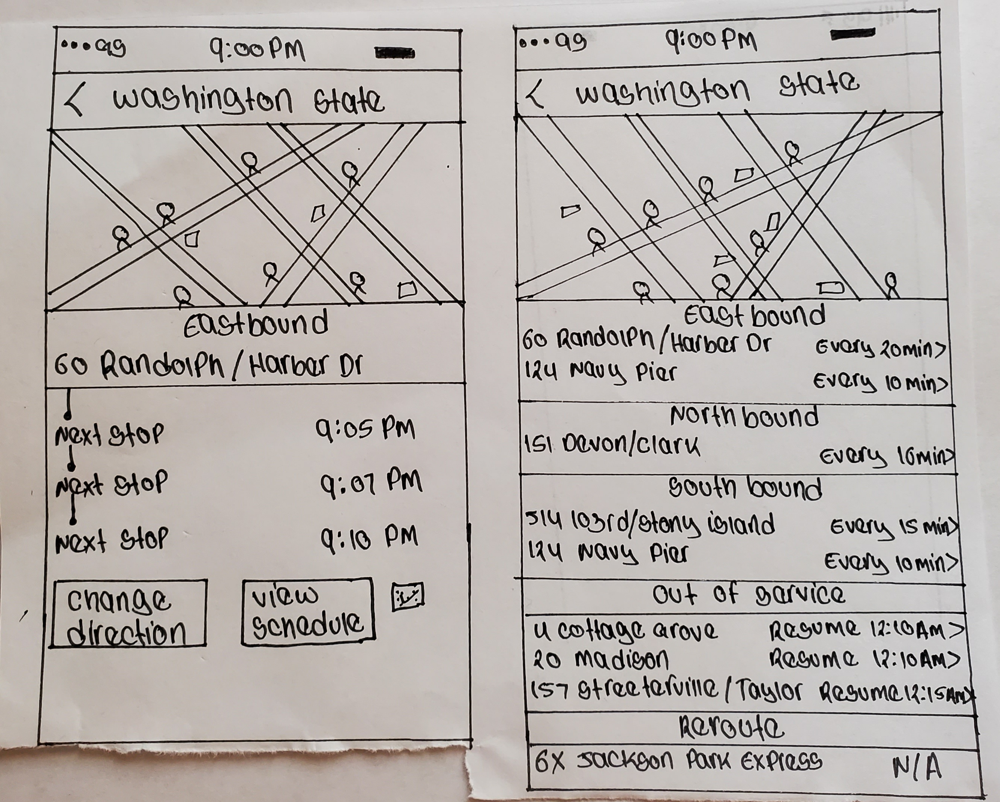

Roles
- UX Design
- Visual Design
- Brand & Identity

Deliverables
- User Surveys
- Competitive Analysis
- User Personas
- User Stories
- User Flows
- Sketches
- Wireframes
- Style Guide
- Hi-Fi Prototype

Tools
- Figma
- Usability Hub
- Draw.io
A mobile app focused on using public transportation in a major city.
For this exercise i was tasked with designing a transit app mobile application called BusyBus that would help riders see where their bus was and when it would arrive at their station.

Due to expansion, numerous bus routes have been recently added and many of those routes stop at the same bus stop. Riders want to know what the next arriving bus is and how much time they have to get to the bus stop. Riders were complaining most about the washington & state, which has seven bus lines serving the stop.

BusyBus displays the next bus and destination according to arrival time, as well as current bus location. It also show a list of buses that runs through that stop will be shown.
To get to know my target audience and clarify their needs. I conducted a survey to gathered information asked question about struggles that users faced with public transit apps.
80% of respondents use public buses for transportation.
46% of respondents said buses were never on time.

40% said navigation wasn’t always accurate.
48% respondents said does not provide wait time for tranfer.
After having a better understanding of my participant's with mobile transit apps. I did research on competitors within the marketspace. From the survey 67% of my respondents prefer using Google Maps and Moovit. I started doing SWOT analyisis on these competitors. I performed a competitive analysis between two key competitors, moovit and Google Maps.
I created a list of the user stories to include in the project, based on what people use frequently and rated important and relevance. I put together high, medium, and low priority user stories.
High priority
I want to be able to know what the next arriving bus is
I want to be able to know at what time I will reach my destination
I want to be able to get real-time transit information
I want to be able to view the list of buses serving my area
Medium priority
I want to be able to get notifications of any delay of the bus
I want to be able to receive the best route for my travel
I want to be able to able to provide/post transit information in the app
I want to be able to receive get off alerts
Low priority
I want to be able to obtain alternate bus route options in nearby stops
I want to be able to receive an accurate wait time for my transfer stops
I want to be alerted on any emergency/mechanical failure of the bus
I want to able to know how much I should pay for my trip
The visual design process started with some rough sketching of how BusyBus would look like. I sketched out two screens performed usability testing using paper prototype and asked them to perform simple tasks such as looking up the next arriving bus for specific bus line.
Through testing I learned how important it was to users to have more information on bus lines,such as frequency of buses to follow.
I learned so much while working through this project, I believe that there is still other screens that I can solve for with BusyBus, However, I believe that i solved for a specific problem for bus riders.